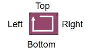

HTML_CSS¶
| Liens_Web: |
|
|---|
HTML¶
Rappel des balises courantes en HTML¶
- <h1>Titre 1</h1> - pour vos titres les plus importants
- <h2>Titre 2</h2> - pour les sous-titres
- <h3>Titre 3</h3> … et ainsi de suite jusqu’à <h6>
- <em>texte</em> permet de mettre l’accent sur une partie du texte
- <strong>texte</strong> permet de mettre encore plus l’accent sur une partie de texte
- <br /> permet d’insérer un saut de ligne (vous ne pouvez rien mettre à l’intérieur d’un élément br)
- <a href= »https://djangogirls.org »>link</a> permet de créer un lien
- <ul><li>premier item</li><li>second item</li></ul> permet de créer des listes, comme celle que nous sommes en train de faire !
- <div></div> permet de créer une section au sein de la page
CSS¶
Positionnement et dimensionnement dans la fenêtre (ou dans la boite)¶

- margin : Marge extérieur
- padding : Marge intérieur
- height : Hauteur
- width : Largeur
Chaque dimensions peut être utilisée dans sa forme courte (dans le sens horraire) :
p { margin:[top] [right] [bottom] [left] } ex : p { margin:3px 2px 3px 2px }
{kind=link}
Chaque dimensions peut aussi être utiliée dans sa forme longue avec les mot clef top, right, bottom, left :
ex : p { margin-top:3px; margin-right:2px; margin-bottom:3px; margin-left:2px; }